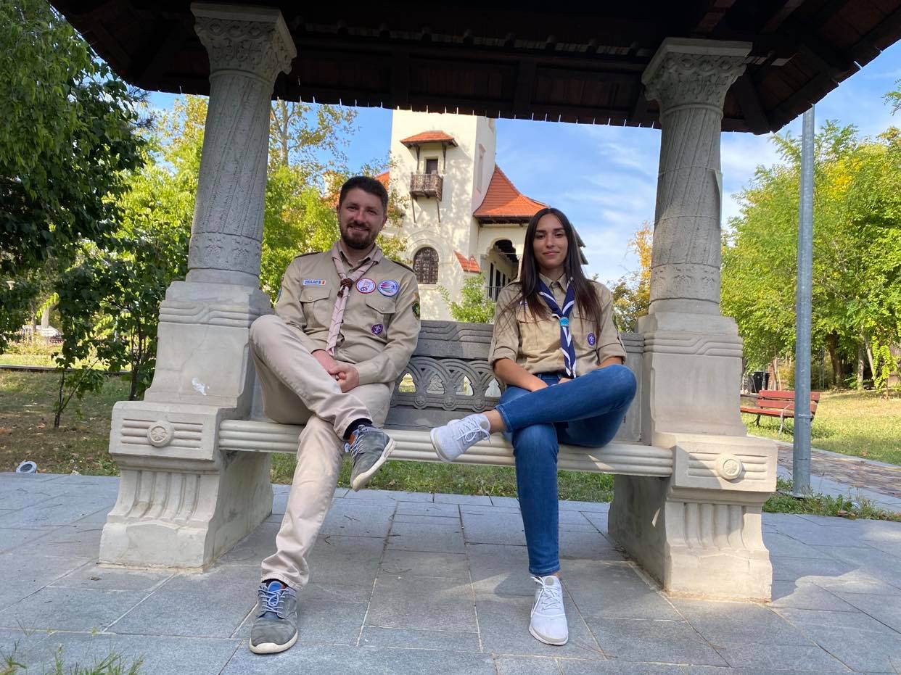
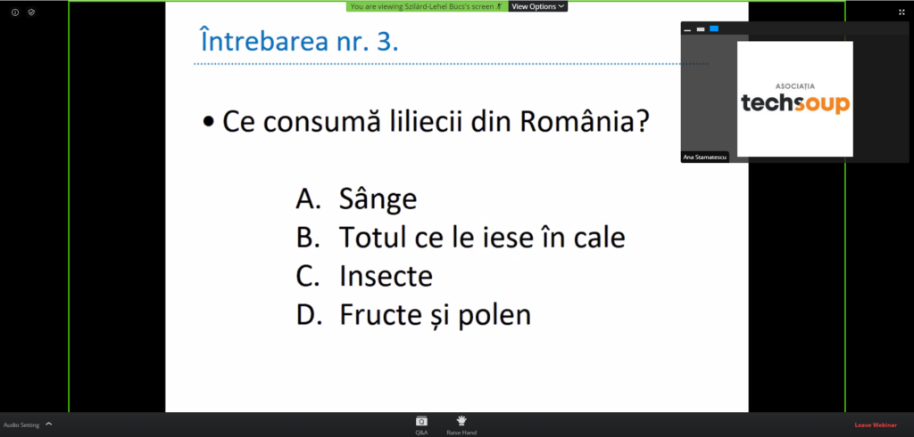

nov 2023 • 4 minnov 2023 • 4 min
nov 2023 • 4 minnov 2023 • 4 minPovești scrise chiar de cercetași — jurnal de amintiri, hike-uri, campuri. Alege un card și citește.
nov 2023 • 4 min iun 2022 • 5 min
iun 2022 • 5 min mai 2022 • 4 min
mai 2022 • 4 min
dec 2020 • 6 min nov 2020 • 3 min
nov 2020 • 3 min nov 2020 • 3 min
nov 2020 • 3 min iul 2020 • 3 min
iul 2020 • 3 min
iun 2020 • 2 min mai 2020 • 4 min
mai 2020 • 4 minNewsletterele s-au mutat în secțiunea lor proprie. Deschide Newslettere →
Toate poveștile vechi ale Cabanei, migrate integral de pe site-ul original — 72 de articole.